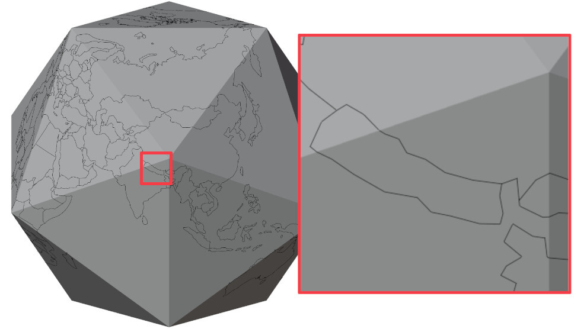

I was working on a video where I wanted to visualise various locations across the former Soviet Union. The requirements were pretty straightforward:
Due to the USSR being so big, it is near impossible to have no visual distortion on a 2D map; think of the Mercator projection that has huge distortions towards the poles. The alternative is thus to just stay in the world of 3D.
The simplest way one might achieve this is by drawing the country borders to some texture, and wrapping that texture around a 3D mesh. In that case we will be dealing with distortions again due to the translation from 2D <-> 3D. Additionally, since a texture has a finite resolution, zooming into far means you start seeing the pixels which violates our "looks nice when zoomed in" rule.
Although I can't think of any concrete examples, I have seen nice globe animations that undoubtedly use some kind of software made specifically for this purpose. But I don't know what they are, and I have no idea how they work on a technical level. What to do in that case except come up with your own crazy convoluted solution?
The approach I decided to go with was to turn the globe and all of the countries on it into separate 3D meshes. It became a small obsessions during the 2 months that I worked on this, to the point that I don't care if there are better methods.
A fair warning, this is my first technical blog post, and a fairly abstract one at that. As such, in some parts I really struggled explaining what is going on exactly, apologies for that.
All country data was obtained from Natural Earth which provides tons of geographical data. This includes the country and region borders that we need.
The data comes in the form of .shp files, which we can interpet using geopandas.
EX: Reading Luxembourg's border from the 1:50M country border dataset:
import geopandas as gpd
data = gpd.read_file("ne_50m_admin_0_countries.shp")
geo_data = data.loc[data["SOVEREIGNT"] == "Luxembourg"]["geometry"]
# List of list since countries can consist of multiple borders: main land, islands, enclaves, ...
luxembourg: list[list[tuple]] = []
if isinstance(geo_data, shapely.MultiPolygon):
for geom in geo_data.geoms:
luxembourg.append(geom.exterior.coords)
else:
luxembourg.append(geo_data.exterior.coords)
The result is a list of (lat, lon) coordinates that describe the border of the country/region. As an example, Luxembourg in 1:110M scale consists of only 6 coordinates (points).
In Natural Earth's dataset all borders/shapes are described in a clock-wise order, which is something that will come in handy later on!
Coordinates describe points on a sphere, but we want points in 3D. The following function transforms a coordinate into a point in 3D space on a sphere of radius 1.
def coord_on_sphere(x, y) -> np.ndarray:
"""Translate (lon,lat) point to a point on a 3D sphere"""
radian_ratio = math.pi / 180
x1 = math.cos(y * radian_ratio)
y1 = 0
z1 = math.sin(y * radian_ratio)
# rotate around z axis
cos_theta = math.cos(x * radian_ratio)
sin_theta = math.sin(x * radian_ratio)
x2 = cos_theta * x1
y2 = sin_theta * x1
return np.array((x2, y2, z1))
If we then write all of these 3D points to an .OBJ file and connect them using lines we get the result in image 1. From a distance this looks good, but if we overlay this on a spherical object we see some strange artefacts seen in image 2.
It looks like our lines are going straight through the sphere! While our points do lie on the surface, the lines are just that: straight lines, meaning they don't follow the sphere's surface. We will need to come up with a solution to make the lines live on the surface.
So far we've been working with a perfect sphere. 3D meshes are made up of flat triangles and non-curved lines. Spheres on the other hand are famous for being very round and not having any flat surfaces; not a great combination. This means that any spherical mesh is just an approximation of the real thing. The more triangles we use, the closer we get to an actual sphere.
We will continue for now with a low res icosahedron (number 1 in the image) as it's easier to visualise what is going on. You'll see later that we can use all sorts of shapes as a base!
In order to connect our points with straight lines that seemingly lie on a sphere we will have to use one of these approximations as our "base" and so our points need to lie on this base. The easiest is to project all our points towards the center of the sphere, and create the projected point on the intersection with our base. This is the method I ended up using.
The general implementation looks something like this:
P = Point(p1, p2, p3)
O = Point(0, 0, 0)
for triangle in base_mesh:
P_prime: Point = intersection(triangle, P, O)
if P_prime is not None:
return P_prime
Now all our points live on this spherical approximation, consisting of triangles.
Wait a second, let's zoom in a bit around the edges of our icosahedron ... that doesn't look right, it seems we are losing some of our outlines again.
Whenever all points lie on a single triangle there is no issue, but when 2 connected points lie on different triangles we have the same problem as before where the line goes through the surface. If we name these 2 "problematic" points A and B, then we want to transform line AB so that it follows the surface. In order to do that we just split up AB into 2 separate lines AE and EB where E is a point on the edge e that the 2 triangles have in common. This way AE lies completely on the same triangle A lives on, and the same goes for EB and B.
Sounds easy enough, but where does E lie exactly? In the middle of the edge or closer to one of its points? The exact position of E is defined in such a way that the sum both lines is as as small as possible, meaning min(|AE| + |EB|). There might be a cool formula for this, but I went with an iterative approach:
# Find the edge between point A and B
T1 = Triangle(A)
T2 = Triangle(B)
e = shared_edge(T1, T2)
# Can be repeated as many times as we want, 15 gives accurate enough results
for i in range(15):
# Get 3 equally spaced points on e
X, Y, Z = subdivide(e, 4)
if distance(A, X) + distance(X, B) < distance(A, Z) + distance(Z, B):
e = (X, Y)
else:
e = (Y, Z)
return Y
Some connected points lie on triangles that don't border each other. In that case we will have to do the above algorithm a few times for each triangle inbetween. To decide what triangles lie in the middle we do the following:
def connect_2_points(A, B):
if on_neighbouring_triangles(A, B):
return
# Get a point in the middle of A and B
P = subdivide(A, B, 2)
# Scale P so it lies outside of our sphere
P *= 2
O = Point(0, 0, 0)
for triangle in base_mesh:
C: Point = intersection(triangle, P, O)
if C is not None:
add_point_to_mesh(C)
connect_2_points(A, C)
connect_2_points(C, B)
break
Once all points are on neighbouring triangles we can apply algorithm one again.

That looks pretty good already! In fact it satisfies all of our requrements except 1.
But since these are just outlines, we can't actually colour in the countries. What we need is a surface to draw on; aka a mesh. If I had known what work was ahead of me at this point, I would have compromised and stopped here. But I didn't so let's continue!
Up until now we've only created outlines of countries, but meshes consist of triangles, not lines. Luckily there already exist some triangulation algorithms that are not that hard to implement, like the ear clipping algorithm. This will allow us to divide our shapes (countries) into individual triangles that describe our mesh.
Although the algorithm is very simple, there are 2 caveats that complicate things. To start with, the algorithm works in 2D but we are operating in 3D. Since all our points lie on triangles, all points that share a triangle lie on the same plane and as such we can treat them as if they live in 2D space. The second caveat is that as we've seen before, countries can span various triangles, so we will need a way to split up our country into pieces so each piece lies on a single triangle.
I'll use Uganda as an example, as one of the icosahedron's points lies nicely in the middle. The end goal is to split the country up into 7 parts, that each lie completely on one the icosahedron's triangles.

In a first pass, we will collect all points per edge and sort them
def prepare_edges_and_corner_vertices(
vertices: list[np.ndarray], faces: list[int | EdgeI], mesh
) -> dict[EdgeI, EdgeDictV]:
"""
Create a mapping from edge (A,B) to a list of tuples (p, d).
* p = point on the edge
* d = distance to B
The list is sorted so that the point closest to B appears earlier in the list.
If A or B itself is also determined to be part of our eventual shape, it is
added to the list. For those, p will be the index in `mesh`, instead of `points`.
"""
# Keep track of which face an edge point is coming from.
edge_points_face_dict: dict[int, int] = {}
# Keep track of which face an edge belongs to (we only keep 1 of the 2)
edge_face_dict: dict[EdgeI, int] = {}
# Per edge, keep a list of points on that edge sorted in order
# as they actually appear on the edge
edge_dict: dict[EdgeI, EdgeDictV] = {}
for i in range(len(vertices)):
f = faces[i]
v = vertices[i]
if isinstance(f, int):
continue
# We orient ourselves relative to the same face for each edge
if f not in edge_face_dict:
face = f.faces[0] # type: ignore[index]
edge_face_dict[f] = face
else:
face = edge_face_dict[f]
ordered_e = mesh.get_ordered_edge(face, f)
# Calculate distance between edge point and left point of the edge
abs_dist = float(np.linalg.norm(v - mesh.vertices[ordered_e.p2]))
# Normalise
dist = abs_dist / float(
np.linalg.norm(mesh.vertices[ordered_e.p1] - mesh.vertices[ordered_e.p2])
)
if f not in edge_dict:
edge_dict[ordered_e] = EdgeDictV(ordered_e, i, dist)
else:
edge_dict[ordered_e].sorted_insert(VertexDistance(i, dist))
edge_points_face_dict[i] = ordered_e.faces[0] # type: ignore[index]
# Add edge points (face corners) when they should be included
for edge, edge_points in edge_dict.items():
face = edge_face_dict[edge]
# The point closest to B must be going out of the face
if edge_points_face_dict[edge_points[0].vertex_i] == face:
edge_points.edge_vertices.insert(0, VertexDistance(edge.p2, 0))
# The point closest to A must be coming into the face
if edge_points_face_dict[edge_points[-1].vertex_i] != face:
edge_points.edge_vertices.append(VertexDistance(edge.p1, 1))
return edge_dict
This will give us the following dictionary (simplified here):
{
(4, 8): [
(index=8, distance=0),
(index=4, distance=0.075)
],
(1, 8): [
(index=8,distance=0),
(index=17,distance=0.042),
(index=15,distance=0.046),
(index=13,distance=0.056),
],
(10, 8): [
(index=8, distance=0),
(index=22, distance=0.037)
],
(3, 8): [
(index=8, distance=0),
(index=29, distance=0.022)
],
(5, 8): [
(index=8, distance=0),
(index=31, distance=0.034)
],
}
To give a bit more detail on the last for loop; here we decide per edge whether a face vertex should be included as a part of our new shapes. By face vertices I mean vertices that make up the faces of the base shape: the icosahedron. We can already see that in this case vertex 8 should be included, as it's a vertex of 5 of our new shapes (all except the green one in our image). All the other face vertices of the edges we cross are not included (e.g. 4 and 1, they are off screen but we can see them in the dictionary).
To decide which face vertices should be included we can make use of the fact that the country borders are all defined anti-clockwise. Imagine you're walking along the border in an anti-clockwise manner; if while crossing an edge the first vertex to the left of you is a face vertex, it will be part of your new shape. It's that simple. If for example vertex 15 went straight back to vertex 4 and closed the country border that way, then the closest vertex left of 15 is 13, which is not a face vertex. As such 8 will never be included.
Using this dictionary, we can construct our new shapes. We go over our border in an anti-clockwise manner again and every time we are about to leave a face, we instead connect to the closest vertex to the left of us. The following pseudo-code describes how we will end up with our newly defined shapes:
new_shapes = []
new_shape = []
edge_vertices = [...]
for vertex in border:
if vertex == new_shape[0]:
new_shapes.append(new_shape)
if len(edge_vertices) == 0:
break
new_shape = []
vertex = edge_vertices[0]
new_shape.append(vertex)
if lies_on_edge(vertex):
if not is_corner(vertex) and not is_leaving_face(vertex):
edge_vertices.remove(vertex)
continue
vertex = closest_vertex_left(vertex)
closes_vertex_left() will loop around the face. In our example that means we go from 17 > 8 > 4.
Now that we've divided the country up in smaller shapes that lie completely on a single plane (a triangle of the icosahedron) all that's left is triangulating these shapes. The ear-clipping algorithm mentioned earlier can only be applied in 2D, so we have to transform our 3D shape so it lies flat on the XY plane, essentially turning it 2D. We apply the algorithm, transform back into 3D and that's it!

Doing this for every single country means our project is complete! Though the wireframe does look very messy.

Phew, that was a journey.
I brushed over a lot of details, and even decided to leave out whole parts as there's just too much to talk about. I hope it does give a bit of an overview and can serve as a guideline to anyone who is trying to achieve something similar. If you're interested, all code is available on the github page.
Enjoy this final result, I think it looks pretty good: TODO